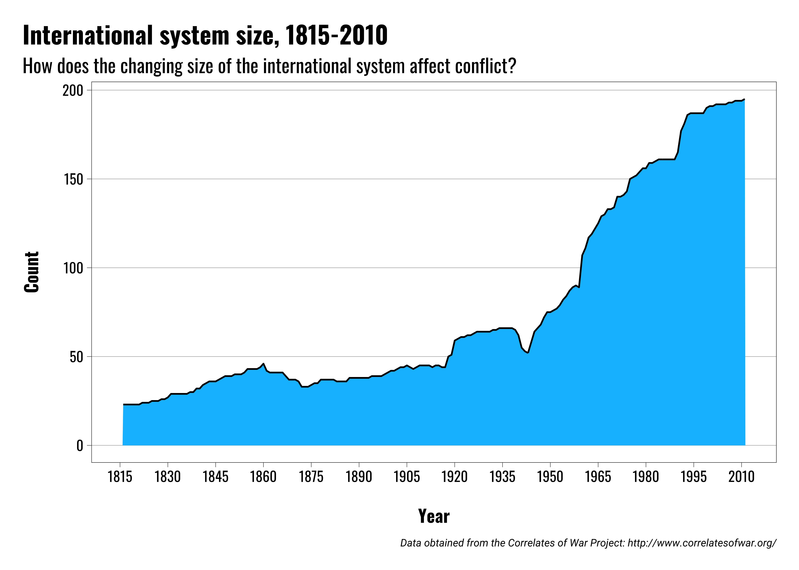
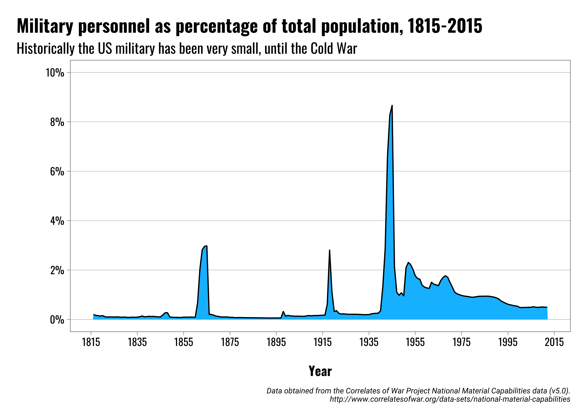
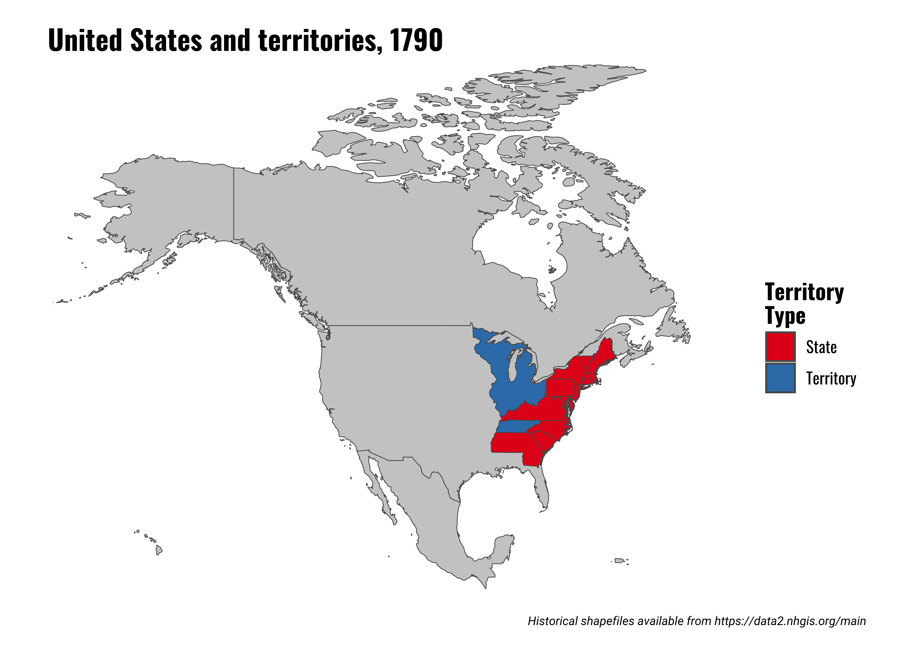
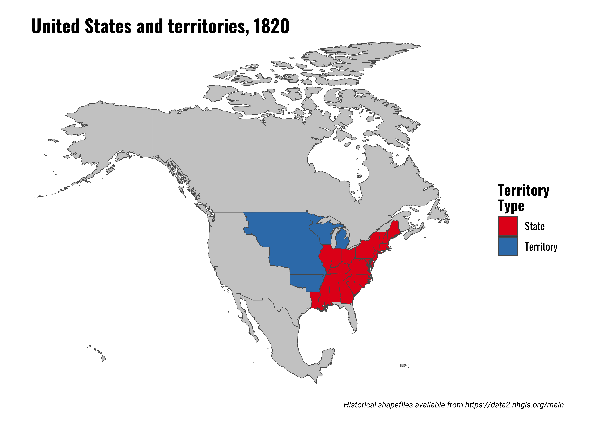
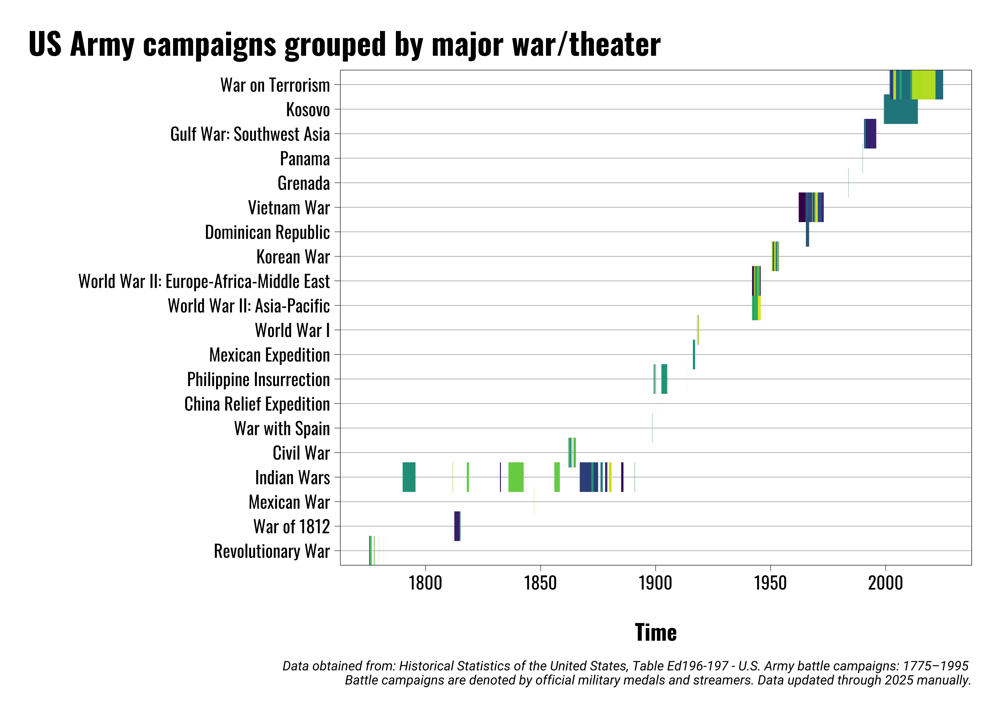
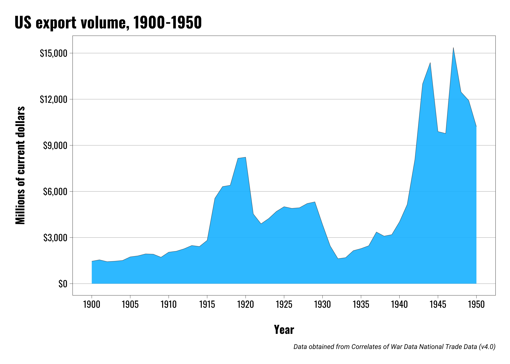
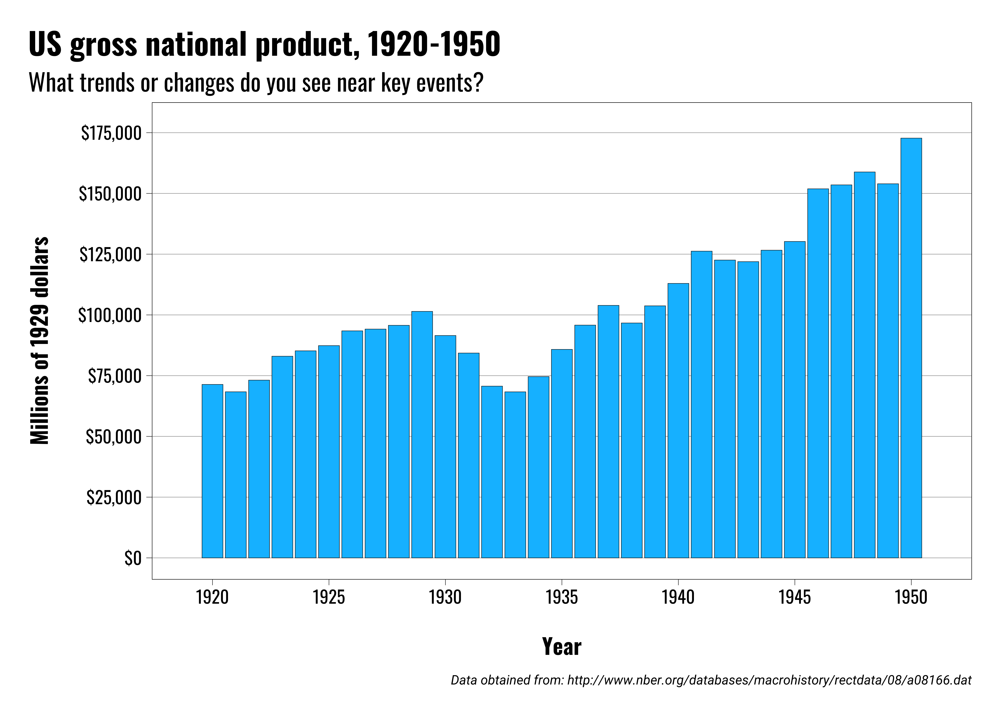
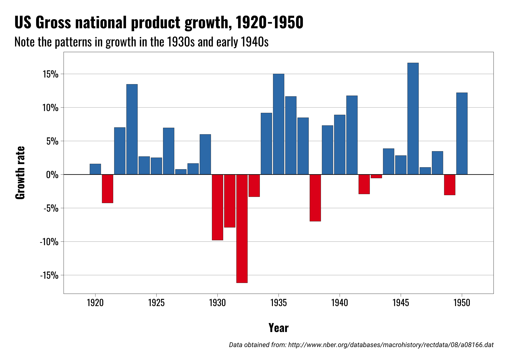
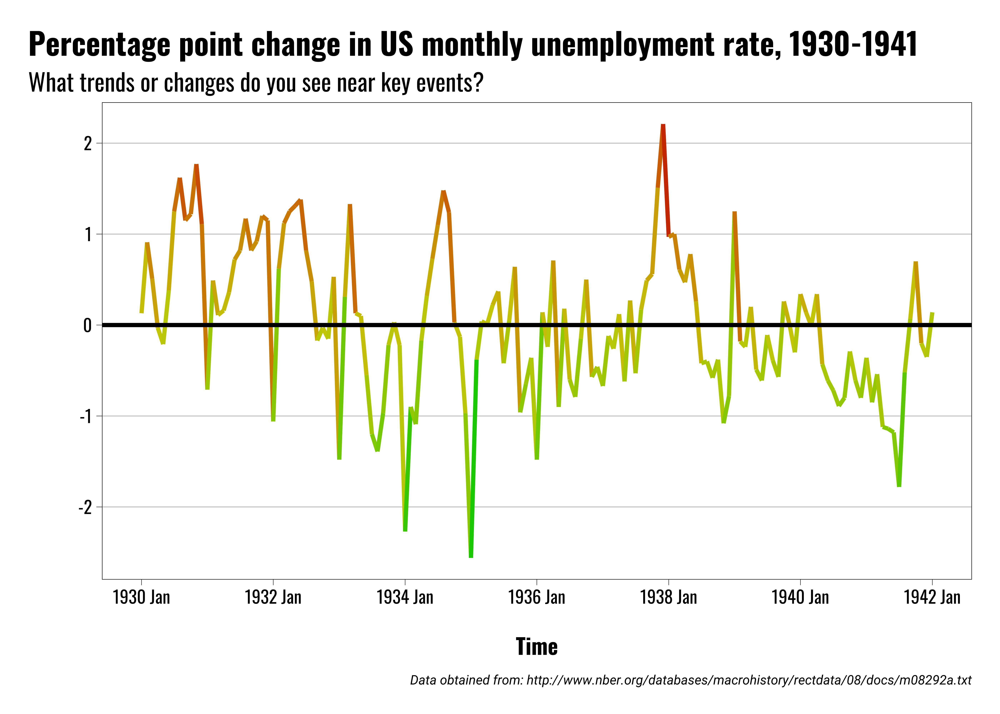

US Foreign Policy
US Foreign Policy in the 19th Century
Michael Flynn
Professor
Department of Political Science
011C Calvin Hall
meflynn@ksu.edu
2025-08-22
Lecture Overview
Early Years (1783-1870)
Transitional Period (1870-1945)
Hegemonic Period (1945-2025)
Post-Hegemonic Period (2025-Future)
Key Questions
What are the major periods in US foreign policy?
What have been some of the key political and economic divides in each time period?
What elements of US foreign policy are common across time period? What changes substantially?
How do we reconcile the process of US expansion with popular rhetoric about democracy and (more recently) human rights?
How does popular historical memory of these earlier time periods shape views on policy today?
Why do we care?
Try to obtain a basic level of descriptive accuracy
Find out if reality matches our basic assumption
Identify, or rule out, potential causal factors
The Basics
The Basics
US is territorially much, much smaller
US interactions with other nations were limited
World is a bigger place
US had no alliances with other states until the 20th century
Military was very small
Low defense expenditures
US and global trade were very low through 1970s





The Early Years
The Early Years
Treaty of Paris: September 3, 1783
Officially ends war with Great Britain
Freedom!
The Early Years
Treaty of Paris: September 3, 1783
Officially ends war with Great Britain
Freedom!
But there were new enemies

The Early Years
America still relatively weak
Small population, no military, not economically developed/diversified
Still vulnerable to attack and economic exploitation
Key Conflicts:
Managing relations with major powers
English and Spanish territories in Canada and Florida
Territorial conflicts with Native Americans on frontier
Access to the Mississippi
Access to foreign markets and shipping rights
The Early Years
Washington’s Farewell Address:
The great rule of conduct for us, in regard to foreign nations, is, in extending our commercial relations, to have with them as little political connexion [sic] as possible. So far as we have already formed engagements, let them be fulfilled with perfect good faith. Here let us stop.
The Early Years
The Early Years
The Early Years
The Nullification Crisis
Tariffs represent one of the biggest sources of conflict in the early US
New tariffs passed in 1828 and 1832
Tariffs affect different segments of the population…differently
Conflict over tariffs for revenue vs tariffs for protection
South Carolina state convention adopts Ordinance of Nullification in 1832
President Jackson threatens to send troops to enforce the tariffs
The Early Years
Mexican–American War (Pre-War 1836–1846)
Texas
Migration of US citizens, slave owners, and slaves into Texas territory
Independent Texas, or annexation?
California
Valuable ports for commerce with Asia
American emigration to California increases over time
British and French claims?
The Early Years
Mexican–American War (1846–1848)
US offered Mexico ~$35 million in cash and debt forgiveness ($800 million + in today’s dollars)
US paid $15 million after war
Cost of war to US: ~$100 million; 13,000+ dead
Cost of war to Mexico: ~25,000 dead; large economic losses
The Early Years
Civil War
North-South split very deep (slavery, economics, expansion, trade, etc)
In reality, these are all very closely connected
Economic interests of the North and South were fundamentally different
The Early Years
Civil War: International Dimension
European attitudes are mixed (oppose slavery, but want weak America)
Some British politicians supported the North, but many favored the South in an effort to keep the United States divided
Weakened United States would pose less of a threat to British hegemony
Independent Southern states would change dynamics of international trade in Britain’s favor
Transition
Transition
US emerges from Civil War as a major power
US economy grows rapidly, surpassing Great Britain somewhere in the 1870s
Policymakers start thinking about the US’ role in the broader world
Attention turns to acquiring overseas territories (i.e. colonies)
The Spanish American War presents the first opportunities for the US to acquire overseas territories
Spain loses; US walks away with the Philippines, Guam, Puerto Rico, and Cuba (sort of)
Transition
Supporters of expansion cite:
- Need for a strong navy
- Economy benefits and secure trade markets
- National pride
- Monroe Doctrine
- Religion
Opponents of expansion cite:
- History
- Washington’s Farewell Address
- Costs of empire
- Monroe Doctrine
- Religion
Rise to Great Power Status
Rise to Great Power Status
World War I
United States enters the war in 1917
Initially neutral
German submarine warfare targets American merchant shipping
Sinking of the Lusitania
Stalemate in Europe as war drags on
Rise to Great Power Status
Consequences of the war:
- Breakdown of old imperial powers
- Austo-Hungarian Empire collapses
- Ottoman Empire collapses
- German Empire defeated
- Creation of several new states
- Nationalism as a driving force in European politics
- Partition of Middle East
- Russian Revolution
- US rejects global leadership role
- New forms of warfare emerge
- League of Nations created
- Reparations imposed on Germany
- Turkey stripped of territory, resources
Rise to Great Power Status
Treaty of Versailles
Often viewed as unfair/unreasonable
France aimed to punish Germany
Severe reparations imposed on Germany
Industrial resources seized
US Senate rejects Treaty of Versailles Twice
League of Nations:
Viewed as a contrast to previous international orders
Provides for collective security
Emphasizes self-determination
Free trade





Rise to Great Power Status
German domesic politics
Germany recovering from initial economic woes, but hit hard by the depression
Radical political parties benefit from economic crisis
Hitler rises to power in 1933
Rise to Great Power Status
German foreign policy actions
Germany, Italy, and Japan sign a series of treaties between 1936 and 1937
March 1938 Germany annexes Austria by “request”
September 1938 Germany annexes Sudentenland (part of Czechoslovakia)
Rise to Great Power Status
Steps to war
September 3, 1939 Germany invades Poland
British and French declare war by day’s end
By July 1940 France falls to Germany forces
Battle of Britain begins in August 1940
Rise to Great Power Status
Japanese foreign policy actions
Japanese military occupied Manchuria in 1931
Extends control of China through early 1940s
Japanese seeking to secure access to materials like oil and rubber
Expansion brings Japan into conflict with Western powers throughout the Pacific
| Resource | Percent |
|---|---|
| Steel | 40% |
| Nickel | 100% |
| Aluminum | 60% |
| Iron Ore | 85% |
| Oil | 80% |
| Note: Data obtained from John Keegan. The Second World War. |
Rise to Great Power Status
The US in the 1930s
US resists-ish steps to mobilize for war
Congress imposes arms embargo on belligerent nations
Congress passes Neutrality Acts 1935-1939
December 7, 1941 Japanese bomb Pearl Harbor naval base